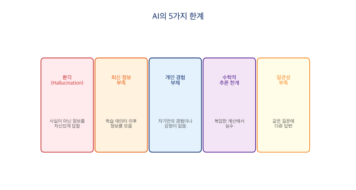

5장 AI 글 평가와 교정¶
AI가 생성한 글은 문법적으로 맞아도 "AI가 쓴 것 같은" 느낌을 줄 때가 많습니다. 그 느낌의 정체를 구체적 기준으로 분해하고, 직접 교정하는 방법을 배워봅시다.
AI 한국어 글의 6가지 전형적 문제¶

문제 1: 문장이 짧고 단절적이다¶
AI는 한 문장에 하나의 정보만 담고 끊는 경향이 있습니다. 한국어는 접속 어미('~이고,', '~인데,', '~하는데,')로 문장을 자연스럽게 이어가는 언어인데, AI 글은 이 연결이 빠져 있어 딱딱하게 느껴집니다.
AI투 (X)
GB200 같은 가속기는 Plug & Play로 설정이 끝나는 장비가 아닙니다. 제대로 사용하기 위해서는 상당히 복잡한 설정과 관리가 필요합니다.
자연스러운 한국어 (O)
GB200과 같은 데이터센터급 가속기는 Plug & Play로 설정을 끝낼 수 있는 장비들이 아니고, 제대로 사용하기 위해서는 꽤나 복잡한 설정과 관리가 필요합니다.
교정 포인트: '~이고,', '~인데,', '~하는데,' 같은 연결 어미로 문장을 이어 붙이세요.
문제 2: 문단을 지나치게 자주 나눈다¶
한두 문장을 쓰고 바로 줄을 바꾸면 글이 산만해 보입니다. 하나의 문단은 하나의 생각을 최소 3~4문장으로 전개해야 합니다.
AI투 (X)
GPU 클러스터 운영에서 활용률은 핵심 지표입니다.
업계 조사에 따르면 평균 활용률은 30~50%에 머물고 있습니다.
자연스러운 한국어 (O)
GPU 클러스터 운영에서 활용률은 핵심 지표인데, 업계 조사에 따르면 평균 활용률은 30~50%에 머물고 있습니다. 100대 규모의 클러스터라면 절반 이상의 연산 능력이 유휴 상태로 놀고 있는 셈이죠.
문제 3: 번역투 표현¶
영어 구문을 직역한 표현이 섞여 있으면 어색합니다.
| 번역투 (X) | 자연스러운 대안 (O) |
|---|---|
| ~하는 것이 중요합니다 | 왜 중요한지 직접 서술 |
| ~에 있어 | ~에서, ~할 때 |
| ~를 기반으로 한 | ~로 만든, ~위에 세운 |
| ~함으로써 | ~하면, ~해서 |
| ~에 대한 깊은 이해 | ~를 잘 아는 것 |
문제 4: 슬롭 워드 (AI 과용 단어)¶
AI가 통계적으로 너무 자주 쓰는 단어들이 있습니다. 전면 금지가 아니라 무의식적 반복을 경계해야 합니다.
- 형용사/부사: 혁신적인, 획기적인, 선도적인, 차별화된, 탁월한, 원활한, 강력한
- 접속구: 이를 통해, 이를 바탕으로, 이와 같이, 이러한 가운데
- 전환어: 또한, 더불어, 나아가, 한편, 특히, 무엇보다
한 문서에서 같은 전환어가 2회 이상 나오면 과용입니다.
문제 5: 종결 어미가 단조롭다¶
'~합니다', '~있습니다'로만 문장을 끝내면 기계가 쓴 느낌이 강해집니다.
AI투 (X)
Backend.AI는 GPU를 관리합니다. Fractional GPU 기술을 제공합니다. 110개 이상의 사이트에서 운영되고 있습니다.
자연스러운 한국어 (O)
~입니다, ~됩니다, ~셈입니다, ~마찬가지입니다, ~죠, ~는데요 등을 섞어 사용하면 훨씬 자연스럽습니다.
문제 6: 메타 해설 (투어 가이드 문장)¶
내용을 직접 서술하지 않고, 한 발 물러서서 내용에 '대해' 해설하는 문장입니다.
| 메타 해설 (X) | 직접 서술 (O) |
|---|---|
| 핵심은 ~입니다 | 핵심이라 부르는 내용을 바로 서술 |
| 가장 뚜렷한 사례는 A입니다 | 'A에서는...' 하고 바로 진입 |
| 이는 X의 결과로 볼 수 있습니다 | X이기 때문입니다 |
| 몇 가지 이점이 생깁니다: | 이점을 바로 서술 |
AI에게 글을 평가시키는 프롬프트¶
AI가 생성한 글을 다시 AI에게 평가시킬 수 있습니다.
종합 평가 프롬프트¶
다음 글을 아래 6가지 기준으로 평가해 주세요.
각 항목마다 (O) 양호 또는 (X) 개선 필요를 표시하고,
(X)인 경우 해당 문장을 인용한 뒤 교정안을 제시해 주세요.
1. 문장 연결: 접속 어미 없이 짧게 끊긴 문장이 있는가?
2. 문단 분절: 한두 문장만으로 이루어진 문단이 있는가?
3. 번역투: "~하는 것이 중요합니다", "~에 있어", "~함으로써" 등이 있는가?
4. 슬롭 워드: "혁신적인", "획기적인", "이를 통해" 등 AI 과용 단어가 있는가?
5. 종결 어미: "~합니다/~있습니다"만 반복되지 않는가?
6. 메타 해설: "핵심은~", "사례는~", "이점이 생깁니다:" 등 투어 가이드 문장이 있는가?
[평가할 글 붙여넣기]
비교 평가 프롬프트¶
아래 두 글은 같은 내용을 다른 말투로 쓴 것입니다.
각각의 장단점을 분석하고, 어떤 상황에서 어떤 글이 더 적합한지 설명해 주세요.
평가 기준: 정보 전달력, 독자 친근감, 신뢰감, 전문성
[글 A 붙여넣기]
[글 B 붙여넣기]
교정 요청 프롬프트¶
다음 글에서 AI가 쓴 것 같은 부분을 모두 찾아 주세요.
각 부분에 대해:
1. 원문 인용
2. 어떤 AI 패턴에 해당하는지 (번역투 / 슬롭 워드 / 단절적 문장 / 메타 해설 등)
3. 교정안
을 표로 정리해 주세요.
[교정할 글 붙여넣기]
말투별 평가 결과¶
4장에서 생성한 6가지 말투의 결과를 위 평가 기준으로 분석하면 다음과 같습니다.
| 말투 | 문장 연결 | 번역투 | 슬롭 워드 | 종결 다양성 | 메타 해설 |
|---|---|---|---|---|---|
| A. 강의형 | O | O | O | O (~거든요, ~인데요, ~예요 혼용) | O |
| B. 경험자형 | O | O | O | O (~거든요, ~됐습니다, ~줍니다 혼용) | O |
| C. 보고서형 | △ | X (~함으로써, 아울러) | O | △ (~입니다 반복) | O |
| D. 선배형 | O | O | O | O (~거야, ~줄어, ~보면 돼 혼용) | O |
| E. 마케팅형 | O | O | O | O | O |
| F. 기사형 | O | △ (~가운데) | △ (이 같은) | O | △ |
보고서형(C)은 격식을 높이려다 번역투('~함으로써', '아울러')가 들어가기 쉽고, 기사형(F)은 객관성을 추구하면서 '이 같은', '~가운데' 같은 AI 과용 접속구가 나타납니다. 반면 강의형(A)과 경험자형(B)은 구어체 특성상 AI 패턴이 가장 적게 나타납니다.
AI의 한계와 윤리¶

환각 (Hallucination)¶
AI가 사실이 아닌 정보를 마치 사실인 것처럼 자신있게 답하는 현상입니다. 존재하지 않는 논문, 가짜 인용, 틀린 통계를 만들어낼 수 있습니다. AI는 '그럴듯한 다음 단어'를 예측하는 것이지 '사실'을 아는 것이 아니므로, 학술 논문 인용은 반드시 직접 확인해야 합니다.
그 외 한계¶
| 한계 | 설명 | 예시 |
|---|---|---|
| 최신 정보 부족 | 학습 데이터 이후 정보를 모름 | '어제 축구 결과 알려줘' → 답변 불가 |
| 개인 경험 부재 | 자기만의 경험이나 감정이 없음 | '네 생각은?' → 사실은 '생각'이 없음 |
| 수학적 추론 | 복잡한 수학 문제에서 실수 | 긴 계산, 논리 퍼즐 등 |
| 일관성 부족 | 같은 질문에 다른 답변 | 매번 결과가 조금씩 달라짐 |
윤리적 주의사항¶
AI를 활용할 때 지켜야 할 원칙이 있습니다.
- 표절 주의: AI가 쓴 글을 그대로 제출하면 표절이 될 수 있습니다.
- 출처 명시: AI를 활용했다면 AI 사용 사실을 밝히는 것이 정직합니다.
- 개인정보 보호: 개인 정보나 민감한 데이터를 AI에 입력하지 않습니다.
- 편향 인식: AI 답변에도 편향이 있을 수 있음을 인지합니다.
- 검증 습관: AI의 답변을 무조건 신뢰하지 말고 확인합니다.
AI는 강력한 도구입니다. 최종 판단은 항상 사람이 해야 합니다.